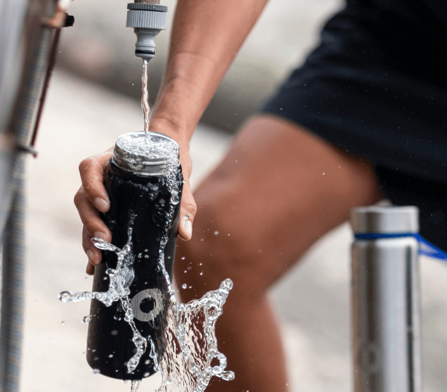
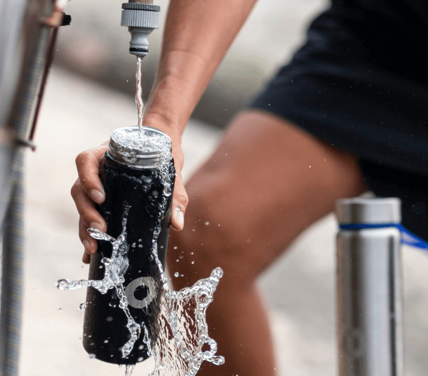

Como o Sedentarismo Afeta Sua Saúde
Com o aumento do trabalho remoto e das jornadas intensas em escritórios, muitas pessoas estão passando longas horas sentadas em frente a computadores, muitas vezes sem perceber os impactos que isso tem em sua saúde. Embora seja comum associar o sedentarismo a problemas de saúde, como obesidade e doenças cardíacas, as consequências de ficar sentado por longos períodos vão além do que muitos imaginam. Neste artigo, vamos explorar os principais riscos envolvidos ao trabalhar sentado por longas jornadas e oferecer dicas de como mitigar esses efeitos.
1. Problemas Musculoesqueléticos
Passar muitas horas sentado pode causar dores nas costas, pescoço e ombros. Isso ocorre porque a postura inadequada ou a falta de movimentação coloca uma pressão constante sobre a coluna vertebral e os músculos, resultando em tensões musculares e até mesmo lesões crônicas, como a lombalgia (dor na parte inferior das costas).
Dica: Levante-se a cada 30 minutos e faça uma breve caminhada ou alongamento para aliviar a tensão.
2. Aumento do Risco de Doenças Cardiovasculares
Estudos mostram que ficar sentado por longos períodos aumenta significativamente o risco de doenças cardiovasculares. Quando estamos sentados, o fluxo sanguíneo desacelera, o que pode resultar em maior risco de hipertensão e problemas circulatórios, como varizes e até mesmo coágulos sanguíneos (trombose). A falta de atividade física também contribui para o aumento dos níveis de colesterol e glicose no sangue, fatores que podem levar ao desenvolvimento de doenças cardíacas.
Dica: Tente incorporar atividades físicas à sua rotina, como caminhadas, ciclismo ou até mesmo exercícios simples de alongamento.
3. Obesidade e Metabolismo Lento
Ficar sentado por longos períodos desacelera o metabolismo, fazendo com que o corpo queime menos calorias. Isso pode contribuir para o ganho de peso e a obesidade. O sedentarismo também está fortemente associado ao aumento do risco de diabetes tipo 2, já que a inatividade reduz a capacidade do corpo de processar a glicose de maneira eficiente, elevando os níveis de açúcar no sangue.
Dica: Faça pausas regulares para se movimentar. Caminhar, esticar ou até mesmo realizar pequenas atividades como subir escadas ou se alongar pode melhorar a saúde metabólica e prevenir o ganho de peso.
4. Aumento do Risco de Câncer
Embora os estudos ainda estejam em andamento, pesquisas indicam que a falta de movimento está associada ao aumento do risco de alguns tipos de câncer, incluindo câncer de cólon, mama e pulmão. A teoria é que o sedentarismo afeta a regulação do sistema imunológico, além de aumentar os níveis de inflamação no corpo, o que pode contribuir para o desenvolvimento de células cancerígenas.
Dica: Além de se manter ativo, a alimentação balanceada e a redução do estresse também desempenham um papel importante na prevenção de doenças graves, como o câncer.
5. Problemas de Saúde Mental
O efeito do sedentarismo não é limitado apenas à saúde física. Ficar sentado por longos períodos pode afetar diretamente sua saúde mental, contribuindo para o aumento dos níveis de estresse, ansiedade e até depressão. A falta de atividade física reduz a produção de endorfinas, os hormônios responsáveis pela sensação de bem-estar e felicidade.
Dica: Pratique técnicas de relaxamento, como meditação ou respiração profunda, e reserve momentos para pausas durante o dia para ajudar a reduzir o estresse e melhorar o humor.
6. Diminuição da Expectativa de Vida
Diversos estudos sugerem que o sedentarismo prolongado pode reduzir a expectativa de vida. A inatividade física tem efeitos cumulativos que podem afetar a saúde a longo prazo, aumentando a probabilidade de desenvolver doenças crônicas, como diabetes, hipertensão e doenças cardíacas.
Dica: Envolva-se em atividades físicas regulares, mesmo que seja uma caminhada rápida no final do dia. Isso pode ter um impacto significativo na sua longevidade.
7. Como Combater os Riscos de Trabalhar Sentado
Agora que você conhece os riscos associados a longas jornadas sentado, aqui estão algumas dicas práticas para incorporar mais movimento à sua rotina de trabalho e melhorar sua saúde:
- Use um temporizador: Programe alarmes para se lembrar de levantar e se mover a cada 30 a 60 minutos.
- Ergonomia: Ajuste a altura da sua cadeira e mesa para garantir uma postura correta e confortável. Considere investir em uma mesa ajustável, que permita trabalhar em pé de vez em quando.
- Alongamentos e Exercícios: Faça alongamentos simples e exercícios de relaxamento ao longo do dia para aliviar a tensão muscular.
- Hidratação e Alimentação: Beba bastante água e prefira alimentos saudáveis para manter seu corpo bem-nutrido e com energia.
- Atividades Físicas Regulares: Se possível, adicione atividades físicas à sua rotina diária. Mesmo 30 minutos de caminhada rápida podem ter grandes benefícios para a sua saúde.
8. Conclusão
O impacto das longas jornadas sentado é significativo e pode afetar várias áreas da nossa saúde, tanto física quanto mental. Ao adotar pequenas mudanças em sua rotina, como pausas regulares para alongamento, atividades físicas e melhorias na ergonomia do ambiente de trabalho, você pode prevenir muitos desses problemas e garantir que sua jornada profissional seja mais saudável e produtiva.
Lembre-se: a prevenção começa com a conscientização. Faça sua saúde uma prioridade, e adote hábitos saudáveis para minimizar os riscos do sedentarismo. Seu corpo e mente agradecem!